T367 · Entrada de jefes
Muestra de revisión del destello, la grieta y el marco de la tarjeta M66.
sources/render_sample.py. No reemplazan el arte provisional del juego. Las imágenes llamadas “composición” son montajes estáticos para revisar escala y posición; solo las capturas con la etiqueta “captura real” provienen de Godot. La simulación corrió en PC con el modo de interfaz móvil, no en un teléfono físico.1. Destello: ritmo, punto de apoyo y escala

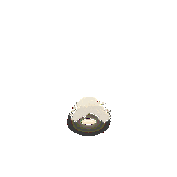

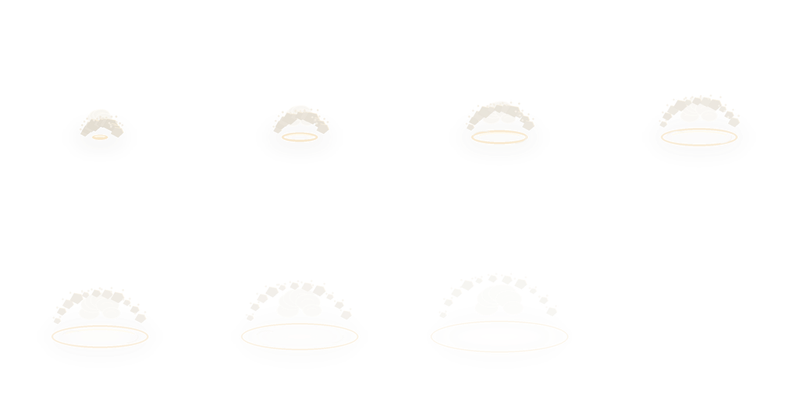

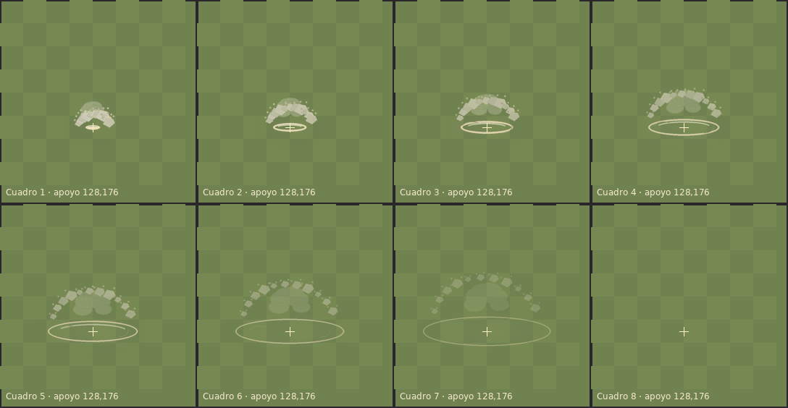

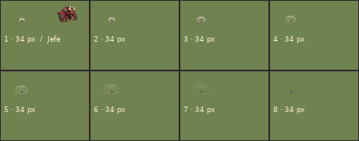
El atlas conserva alfa real. El último cuadro está completamente transparente. El efecto no lleva sombra dibujada; al colocarse en la entrada superior izquierda puede recortarse con el borde del mapa, como ocurre con el efecto provisional actual.
2. Tinte de facción
El PNG es claro y neutro; estas muestras multiplican el mismo cuadro de impacto por el color del enemigo. El Jefe usa el carmesí oficial. Azul y verde son ejemplos de extensibilidad.
#ba403e
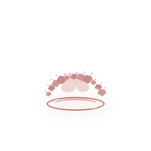
#6189b7
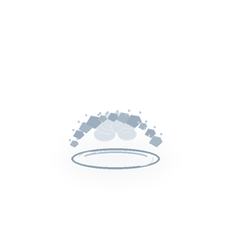
#709d52
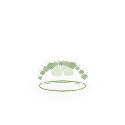
3. Grieta y marco

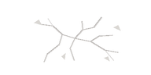

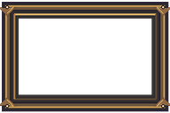
Tarjeta armada

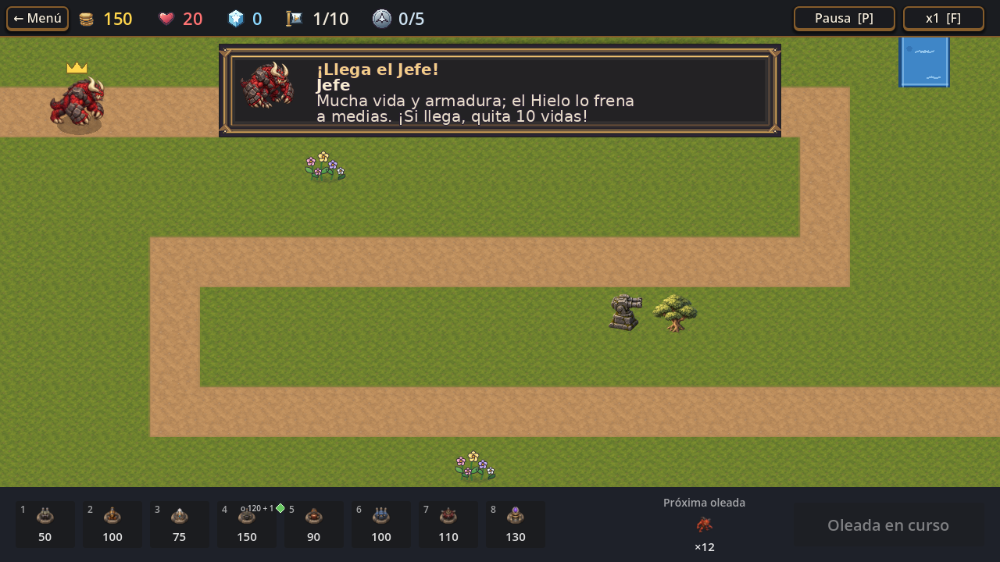

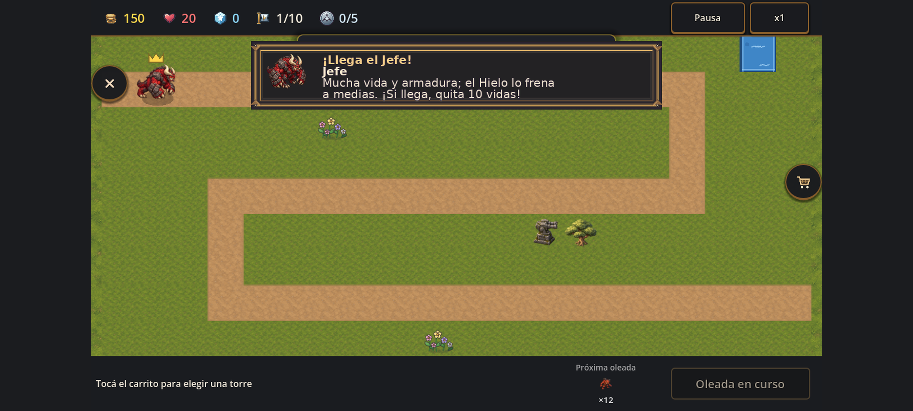
4. Contexto real del nivel 1
Estas capturas reales muestran el juego actual con el arte provisional de T368. Se conservaron como referencia de escala y del orden visual; no contienen el PNG candidato.

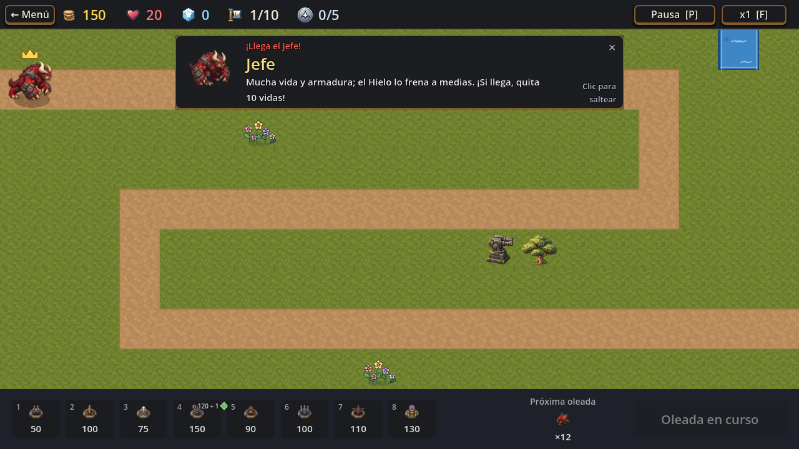

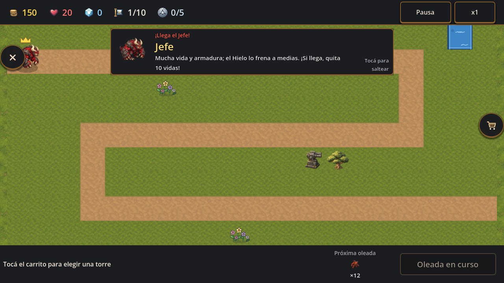
Composición de escala del candidato sobre captura real
Montajes estáticos del candidato sobre el nivel 1 real, cuadro a cuadro. El jefe se volvió a componer con el primer cuadro de boss_walk.png para mantenerlo delante del polvo. No son capturas de una build que integre el arte; sirven para revisar si el efecto tapa al jefe, el camino o la barra superior.


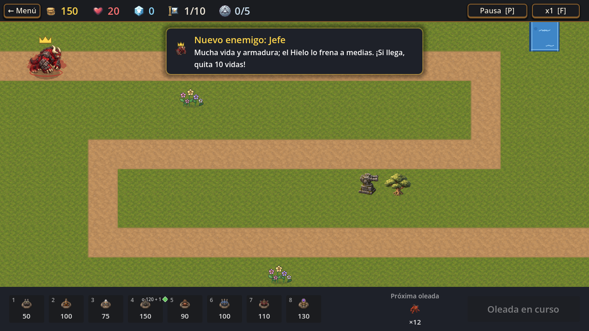


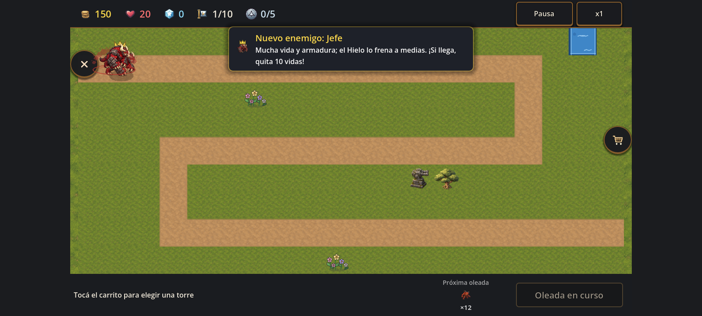
5. Validación y límites
- Godot 4.7.2 importó el checkout y ejecutó
tools/capture_boss_entrance.tscna 1280 × 720 para PC y modo móvil. Las seis capturas del flujo provisional terminaron correctamente. - Se generaron y se midieron el atlas, la grieta y el marco; el manifest registra tamaño, formato, peso y hash.
- La animación GIF dura 0,704 s a 88 ms por cuadro. El octavo cuadro está vacío, como exige la ficha.
- El editor no integró estos PNG a
assets/; por eso todavía no se probó su importación en juego, el rendimiento de T369, los 60 FPS en PC, el límite de 1 ms/cuadro en celular ni el peso de APK. - El modo móvil fue una configuración de interfaz simulada en PC. No se usó un teléfono físico ni se hizo una exportación Android.
Fuentes y brief visual: prompts.md y sources/render_sample.py. Los detalles de dimensiones y SHA-256 están en manifest.json.
T367 sigue pendiente de aprobación de Lucas. Esta carpeta contiene muestras de revisión; nada de aquí se considera arte final ni se instaló en el juego.